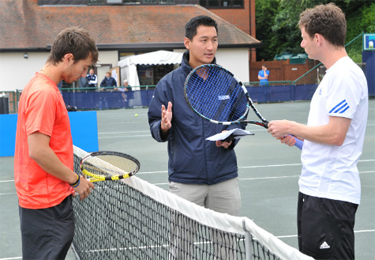
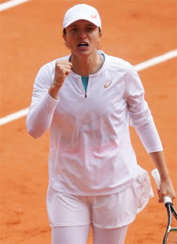
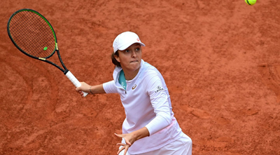

← Bài trước: Using Statistics in Coaching | 🏠 Strategy Trang chủ | Bài tiếp: → Why Poaching is Overrated
Sử dụng Thống kê để Nâng Cao Kết quả
Thư viện kiến thức quần vợt thống nhất — Cơ bản, Phân tích Kỹ thuật, Thư viện Tham khảo và nhiều hơn nữa
Sử dụng Thống kê để Nâng Cao Kết quả
Andy Durham

Một số trong số 85 chỉ số cơ bản của bóng chày.
Nếu bạn từng học môn thống kê đại học, bạn có thể nhớ nó với cùng sự hứng thú như phải dọn phòng khi còn nhỏ. Bạn đã học các thuật ngữ và công thức dường như không có ứng dụng thực tế nào.
Nhưng ngày nay, trong hầu hết các môn thể thao, thống kê đã trở thành một khoa học phức tạp để giành được lợi thế cạnh tranh từ cấp độ nghiệp dư đến chuyên nghiệp. Hầu hết các môn thể thao đều có nhiều số liệu thống kê quen thuộc, đo lường mọi thứ từ độ dài trung bình của một cây sắt 6, đến tỷ lệ ném phạt, đến số yard trên mỗi lần chạy, đến tỷ lệ đánh trúng bóng.
Một số thống kê cơ bản mà tôi đã đếm được cho bóng chày là 85, bóng rổ là 47, và bóng đá là 45. Các đội sử dụng thông tin này để tuyển dụng tài năng, cải thiện điểm mạnh và củng cố điểm yếu. Nhưng cũng để trinh sát đối thủ để tận dụng điểm yếu của họ và chống lại điểm mạnh của họ.
Trong các môn thể thao khác, những thống kê này được coi là điều hiển nhiên và có sẵn cho mọi cấp độ vận động viên từ người mới bắt đầu đến chuyên nghiệp. Nhưng điều này không phải trường hợp với quần vợt. Trong quần vợt, những thống kê quan trọng này cho đến gần đây chỉ có sẵn cho các vận động viên cấp cao, thường là các vận động viên đại học và tour chuyên nghiệp.

Hầu hết các huấn luyện viên dựa vào kiến thức cá nhân và kinh nghiệm cá nhân.
Thay vào đó, các huấn luyện viên quần vợt trên toàn thế giới đã dựa vào kiến thức cá nhân, kinh nghiệm cá nhân và đôi khi là video và thông tin khác từ giáo dục để giúp các vận động viên của họ.
Tôi tin rằng có một khoảng trống lớn trong tiềm năng cải thiện của người chơi trong quần vợt so với các môn thể thao khác do thiếu những con số cơ bản nhất. Khoảng trống này cần được giải quyết nếu chúng ta muốn đẩy nhanh quá trình phát triển của người chơi.
Ai?
Nhưng ai có thể chịu trách nhiệm về việc thu thập thông tin này? Rõ ràng không phải là người chơi vì họ đang bận chơi trận đấu giải đấu. Và ít huấn luyện viên nào có thể tham dự các giải đấu thường xuyên.

Ảnh hưởng của gia đình là quan trọng thông qua sự tập trung và khuyến khích tích cực.
Người có thể làm được điều này là một người cha mẹ, một người bạn, hoặc một người cố vấn—bất kỳ ai thường xuyên tham dự các giải đấu với người chơi.
Hiện tại, các cha mẹ thường chỉ trả tiền cho các bài học, vận chuyển người chơi đến các giải đấu và ngồi bất lực trên ghế khán đài. Nhiều người trong chúng tôi đã chứng kiến những khó khăn mà các cha mẹ, những người không thường xuyên hiểu những gì xảy ra trên sân, không phải để nói đến người chơi và đương nhiên là huấn luyện viên phải dựa vào thông tin gián tiếp.
Vai trò quan trọng của gia đình hoặc người cố vấn trong sự phát triển của một vận động viên là quan trọng. Những gia đình tham gia nhiều với sự tập trung tích cực giúp đỡ vận động viên thông qua sự khuyến khích, sự tập trung và hỗ trợ. Nhưng bây giờ các công nghệ có giá cả phải chăng đang nâng cao vai trò của gia đình và người cố vấn bằng cách cho phép họ có tác động đáng kể trên tất cả các khía cạnh của trò chơi của người chơi.
Những ứng dụng mới được xuất bản cung cấp một cách để tất cả các cấp độ người chơi quần vợt có thể truy cập vào dữ liệu tăng cường hiệu suất mà trước đây chỉ dành cho các vận động viên cao cấp. Một số ứng dụng mới như RacketStats của tôi, MatchTracker, ProTracker là những ví dụ về các ứng dụng hiện có trên thị trường.
Mỗi ứng dụng khác nhau về độ dễ sử dụng, thông tin có sẵn và chi phí. Các ứng dụng như vậy có thể trao quyền cho các cha mẹ, huấn luyện viên và người cố vấn để hợp tác trong việc phát triển một người chơi đến tiềm năng đầy đủ của họ.
Bạn nên kỳ vọng gì từ một ứng dụng như vậy? Ba lĩnh vực chính được liệt kê bên dưới.
Ba Lĩnh vực Quan trọng
Độ dễ sử dụng
Số lượng thống kê quan trọng có sẵn
Thông tin có thể tiêu hóa dễ dàng và liên quan
Những ứng dụng này rất có giá trị cho việc trinh sát. Một ứng dụng tốt sẽ chỉ ra điểm mạnh và điểm yếu của người chơi khác để bạn có thể tạo ra một kế hoạch trò chơi hiệu quả. Điều này được thực hiện trong mọi môn thể thao khác.
Nhiệm vụ của bạn là một người cha mẹ, người cố vấn hoặc huấn luyện viên là đảm bảo rằng người chơi của bạn cải thiện càng nhanh càng tốt, và việc học cách tạo ra các kế hoạch trò chơi thành công nên là một phần của giáo dục của họ.
Racket Stats cung cấp các số liệu để tối ưu hóa hiệu suất. (Nhấn vào đây.)
Tôi tin rằng cần một đội để phát triển một vận động viên đến tiềm năng đầy đủ của họ. Những ứng dụng này cung cấp phản hồi có giá trị để tối ưu hóa hiệu suất của người chơi, không phải bằng ý kiến, mà bằng dữ liệu thực tế.
Điều gì cần đánh giá
Khi chúng ta đánh giá trò chơi của một người chơi, có nhiều quan điểm. Họ đánh nhiều quả thắng không? Họ mắc nhiều lỗi không? Họ đến lưới quá ít hoặc quá nhiều? Họ phòng thủ tốt không?
Điều mà tôi tin rằng đặt Racket Stats khác biệt là những gì chúng tôi gọi là Tỷ lệ Thắng/Lỗi. Tất cả các điểm kết thúc bằng một quả thắng hoặc lỗi, một lỗi buộc hoặc một lỗi không buộc. Chức năng Tỷ lệ Thắng/Lỗi trong Racket Stats tự động tổng hợp tất cả những điều này để đưa ra tỷ lệ đó.
Điều này được tạo ra bằng cách chia số quả thắng cho số lỗi. Ví dụ, nếu bạn đánh 10 quả thắng và mắc 20 lỗi, bạn chia 10 cho 20 và nhận được tỷ lệ Thắng/Lỗi là 0,50.
Đối với người chơi, tỷ lệ này có thể được cải thiện bằng một trong hai cách: tăng số lượng quả thắng hoặc giảm số lượng lỗi. Ví dụ, nếu người chơi giờ đây đánh 15 quả thắng trong khi mắc cùng 20 lỗi, thì tỷ lệ Thắng/Lỗi bây giờ là 0,75. Nếu số quả thắng vẫn giữ nguyên, nhưng số lỗi giảm xuống còn 15, thì tỷ lệ Thắng/Lỗi bây giờ là 0,67.

Các số liệu đã chỉ ra điều gì về chiến thắng của Iga Świątek trong Giải Pháp Điền năm 2020?
Đối với mục đích của tỷ lệ Thắng/Lỗi, một "quả thắng" là một cú đánh sạch sẽ vượt qua đối thủ, hoặc một cú đánh bị chạm hoặc không thể trả lại. Một "lỗi" là bất kỳ cú đánh nào mà người chơi đánh vào lưới hoặc ra ngoài sân.
Trong bài viết đầu tiên trong loạt bài này, chúng tôi đã thảo luận về một chỉ số khác được phát triển bởi Bill Jacobson, được gọi là Lợi thế Tấn công. (Nhấn vào đây.) Sự khác biệt so với tỷ lệ Thắng/Lỗi của chúng tôi là Lợi thế Tấn công phân biệt giữa lỗi buộc và lỗi không buộc.
Lợi thế Tấn công thêm một mức độ hiểu biết sâu hơn vào phân tích, và chúng tôi dự định sẽ tích hợp nó vào các phiên bản tương lai của Racket Stats. Nhưng hiện tại, tỷ lệ Thắng/Lỗi cho phép người chơi, cha mẹ và huấn luyện viên có một nơi tốt để bắt đầu bằng cách đưa ra tổng quan về cách và nơi mà các trận đấu được giành chiến thắng và thua.
Vì vậy, khi chúng ta xem một bản in của một trận đấu từ Racket Stats, khu vực đầu tiên cần xem xét là tỷ lệ Thắng/Lỗi cho cả hai người chơi. Hãy sử dụng một ví dụ trận đấu chuyên nghiệp gần đây để xem tỷ lệ nào cho thấy.
Trong trận Chung kết Giải Pháp Điền nữ năm 2020, Iga Świątek đánh bại Sophia Kevin 6-4, 6-1. Kenin chỉ đánh 5 quả thắng trong khi mắc 36 lỗi. Vì vậy, tỷ lệ Thắng/Lỗi của cô là 0,14. Ngược lại, Świątek đánh 27 quả thắng với chỉ 41 lỗi, tỷ lệ là 0,66.
Lịch sử cho thấy rằng các tay vợt hàng đầu thường có tỷ lệ Thắng/Lỗi từ 0,40 đến 0,50, tức là cho mỗi quả thắng họ đánh, họ cũng mắc hai lỗi. Kenin đang ở dưới mức này và Świątek đang ở trên mức này.
Vai trò của huấn luyện viên không chỉ là nhìn thấy điều này, mà còn là tìm ra nơi mà các quả thắng và lỗi đến từ. Để đơn giản hóa điều này, báo cáo trận đấu của Racket Stats được chia thành các phần Cú giao bóng, Cú trả giao bóng, Cú đánh trên sân, Lưới và Tóm tắt, và mỗi phần này có một phần Tỷ lệ Thắng/Lỗi. Bằng cách quét các phần này, bạn có được một cái nhìn nhanh về nơi mà các quả thắng và lỗi đến từ.

Tỷ lệ Thắng/Lỗi của Kenin thấp hơn đáng kể so với Swiatek trên sân.
Tỷ lệ Thắng/Lỗi trung bình thay đổi khi bạn xem xét từng phần này. Tỷ lệ thường khá cao cho các phần Cú giao bóng và Lưới, nhưng thấp hơn nhiều cho Cú trả giao bóng và Cú đánh trên sân.
Kenin và Świątek đối đầu đều nhau trong phần Cú giao bóng, cả hai đều có tỷ lệ Thắng/Lỗi là 0,33. Nhưng điều này đã thay đổi ở lưới, nơi tỷ lệ của Kenin là 1,0 trong khi Świątek thống trị với tỷ lệ 9,0.
Trong phần Cú trả giao bóng, Kenin giành chiến thắng với tỷ lệ 0,60, so với tỷ lệ 0,00 của Świątek, có nghĩa là Świątek không đánh được quả thắng nào.
Biểu đồ tóm tắt tỷ lệ Thắng/Lỗi cho cả hai người chơi.
Kenin
Swiatek
Cú giao bóng
1:3 = 0,33
1:3 = 0,33
Cú trả giao bóng
6:10 = 0,60
0:7 = 0,00
Cú đánh trên sân
3:8 = 0,38
9:1 = 9,00
Tổng thể
5:36 = 0,14
27:41 = 0,66
Đường cơ sở
Vì vậy, khi bạn xem xét con của mình hoặc học sinh, điều đầu tiên bạn cần làm là lập biểu đồ cho một số trận đấu để thiết lập một đường cơ sở đáng tin cậy và xem xét tỷ lệ Thắng/Lỗi Tổng thể. Sau đó, xem xét tỷ lệ trong các khu vực khác nhau, và tùy thuộc vào trò chơi của người chơi, chọn các khu vực quan trọng nhất và bắt đầu công việc bằng cách tăng số lượng quả thắng hoặc giảm số lượng lỗi.

Một yếu tố quan trọng là tỷ lệ Thắng/Lỗi của Swiatek ở lưới.
Với Racket Stats, bạn cũng có được thống kê trong khi trận đấu đang diễn ra, Thống kê Trực tiếp. Giữa các lần thay đổi hoặc các sự cố, bạn có thể xem thống kê cho cả hai người chơi để nhận thức về nơi mà mỗi người chơi đang thành công và thất bại.
Giả sử rằng khi người chơi của bạn đang giao bóng thứ hai đến sân deuce, họ đang giành được 51% điểm. Nhưng khi giao bóng thứ hai đến sân ad, họ chỉ giành được 35% điểm.
Đây là nơi mà bạn, với tư cách là huấn luyện viên, sẽ chú ý. Trong phần còn lại của trận đấu, bạn sẽ chú ý đến những gì người chơi làm khi tình huống giao bóng thứ hai đến sân ad xảy ra.
Thống kê không có nghĩa gì nếu bạn không thể gắn một "tại sao" vào nó, và bạn, với tư cách là huấn luyện viên, là người duy nhất có thể nhìn thấy nguyên nhân gốc rễ. Với những thống kê đúng đắn trong tay, buổi tập tiếp theo của bạn có thể rất tập trung.
Tất nhiên, tỷ lệ Thắng/Lỗi sẽ thay đổi một chút trong ngày và đặc biệt là đối với các đối thủ khác nhau, nhưng một khi bạn hiểu khi nào những thay đổi này xảy ra, bạn có thể chuẩn bị cho người chơi của mình để xử lý những tình huống này, làm cho họ trở nên cạnh tranh hơn đối với mọi loại đối thủ.

Andy Durham là người sáng lập của RacketStats.com, một ứng dụng cho phép các cha mẹ, người chơi và huấn luyện viên có một hệ thống dễ dàng để lập biểu đồ và truy cập vào các thống kê quan trọng. Anh là thành viên của USPTA, PTR và đã dạy học trong 48 năm, nhiều học viên của anh đã đạt đến cấp độ đại học, WTA và ATP. Hiện tại anh là Giám đốc Quần vợt tại Trung tâm Quần vợt Cindy Hummel ở Auburndale, Florida. Bạn có thể liên hệ với Andy tại info@racketstats.com
Nguồn: tennisplayer.net lưu trữ — Sử dụng Thống kê để Nâng Cao Kết quả.docx (Thư viện giảng dạy của John Yandell, 2002-2022). Đã được trích xuất và hiển thị dưới dạng HTML cho Tennis Future Lab.